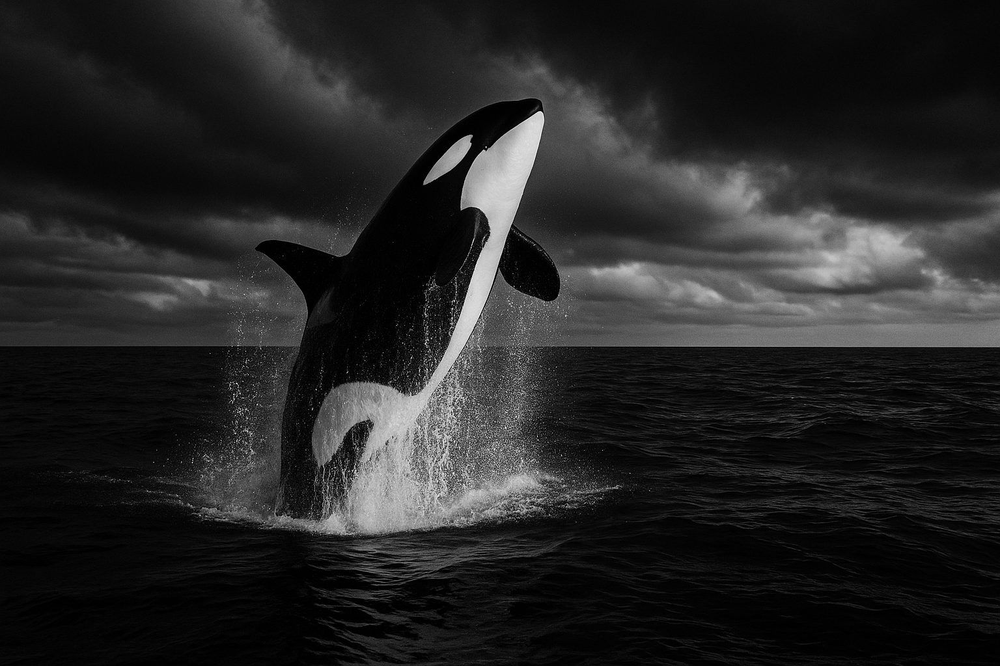

Dialects
Vocal repertoires differ across pods, helping distinguish one community from another.
Orcas are often discussed as a rare example of non-human culture in the wild because group identity can shape communication, foraging, and behavior over generations.

Vocal repertoires differ across pods, helping distinguish one community from another.
Long-term family structure often revolves around mothers and related offspring.
Calves and juveniles absorb complex behavior through repeated exposure to group routines.
Feeding preference, travel style, and call patterns can all contribute to group identity.
Orcas challenge the idea that intelligence can be understood in isolation from society. Their social world appears to shape what they know, how they hunt, and how information persists through time.